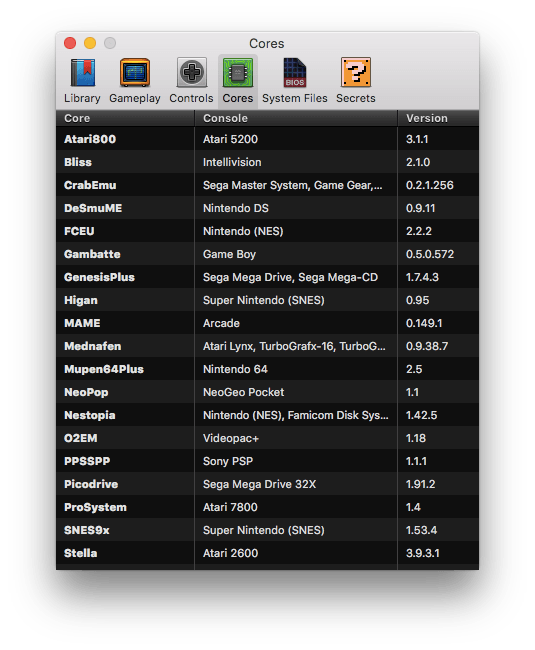

In OpenEmu, a Core is a plugin with the 'guts' of an emulator. Each core can emulate one or more systems. This preferences tab shows a listing of Cores, their versions, and the Consoles they power. If a Core is not installed, or has an update available, an "Install" or "Update" button will appear where the version number usually is.
